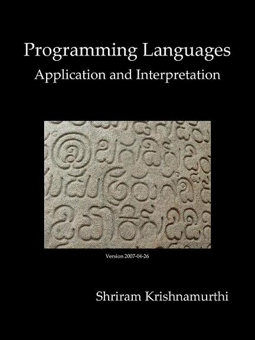
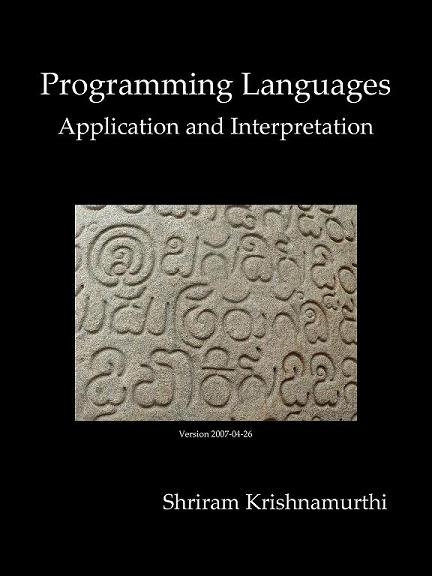

索引
封面

- The translation has not been checked by the original author
- The correct, definitive version is at the original link.
第二版: Programming Languages: Application and Interpretation - Second Edition
译者
本翻译版权属于两位译者

第二版: Programming Languages: Application and Interpretation - Second Edition
本翻译版权属于两位译者